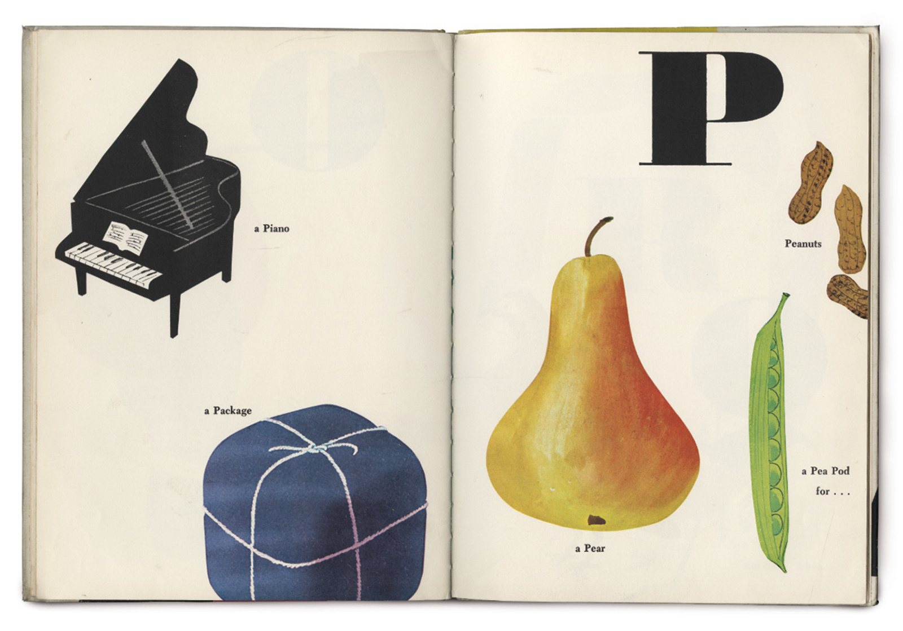
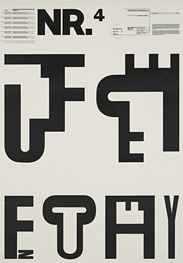
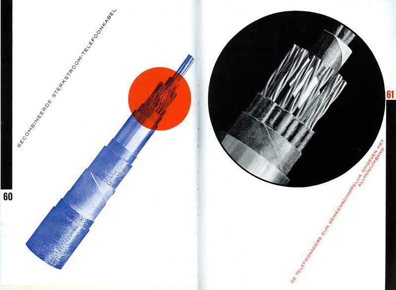
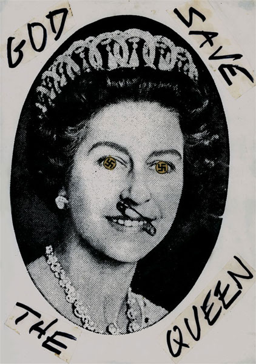

Designer as Author was an attempt to recuperate the act of design itself as essentially linguistic a vibrant, evocative language. However, it has often been read as a call for designers to generate content: in effect, to become designers and authors, not designers as authors. While I am all for more authors, that was not quite the point I wanted to make.
The problem is one of content. The misconception is that without deep content, design is reduced to pure style, a bag of dubious tricks. In graphic-design circles, form-followsfunction is reconfigured as form-follows-content. If content is the source of form, always preceding it and imbuing it with meaning, form without content (as if that were even possible) is some kind of empty shell.
The apotheosis of this notion, repeated ad nauseum (still!), is Beatrice Warde's famous Crystal Goblet metaphor, which asserts that design (the glass) should be a transparent vessel for content (the wine). Anyone who favored the ornate or the bejeweled was a knuckle-dragging oaf. Agitators on both sides of the ideological spectrum took up the debate: minimalists embraced it as a manifesto; maximalists decried it as aesthetic fascism. Neither camp questioned the basic, implicit premise: it's all about the wine.
This false dichotomy has circulated for so long that we have started to believe it ourselves. It has become a central tenet of design education and the benchmark against which all design is judged. We seem to accept the fact that developing content is more essential than shaping it, that good content is the measure of good design.
Back when Paul Rand wrote "There is no such thing as bad content, only bad form," I remember being intensely annoyed. I took it as an abdication of a designer's responsibility to meaning. Over time, I have come to read it differently: he was not defending hate speech or schlock or banality; he meant that the designer's purview is to shape, not to write. But that shaping itself is a profoundly affecting form. (Perhaps this is the reason that modern designers Rand, Munari, Leoni always seem to end their careers designing children's books. The children's book is the purest venue of the designer/author because the content is negligible and the evocative potential of the form unlimited.)?
Sparkle and Spin
1957 by Ann Rand Ozbekhan and Paul Rand.

Bruno Munari's ABC
1960 by Bruno Munari.
Inch by Inch
1960 by Leo Lionni.
A director can be the esteemed auteur of a film he didn't write, score, edit or shoot. What makes a Hitchcock film a Hitchcock film is not the story but a consistency of style, which winds intact through different technologies, plots, actors, and time periods like a substance of its own. Every film is about filmmaking. His great genius is that he is able to mold the form into his style in a genuinely unique and entertaining way. The meaning of his work is not in the story but in the storytelling.
Designers also trade in storytelling. The elements we must master are not the content narratives but the devices of the telling: typography, line, form, color, contrast, scale, weight. We speak through our assignment, literally between the lines.
The span of graphic design is not a history of concepts but of forms. Form has evolved dramatically from one year to the next, and suggests a profession that continually revises and reshapes the world through the way it is rendered. Stellar examples of graphic design, design that changes the way we look at the world, are often found in service of the most mundane content: an ad for ink, cigarettes, sparkplugs or machinery. Think of Piet Zwart's catalogues for electrical cable; or the travel posters of Cassandre or Matter; or the New Wave work of Weingart, Greiman and Freidman; or the punk incitations of Jamie Reid, in which the manipulation of form has an essential, even transformative, meaning.
Cassandre, A.M. Travel Posters
Nord Express, 1927 and Normandie, 1935.

Typographic Process, Nr 4. Typographic Signs
New-wave typography 1971-1972 by Wolfgang Weingart.

NKF catalogue
1927-1928 by Piet Zwart.

God Save the Queen Sex Pistols Cover Art
1977 by Jamie Reid.
Because the nature of the designed object is limited, individual objects are rarely substantial enough to contain fully rendered ideas. Ideas develop over many projects, spanning years. Form itself is indexical. We are intimately, physically connected to the work we produce, and it is inevitable that our work bears our stamp. The choice of projects in each designer's oeuvre lays out a map of interests and proclivities. (I use the singular designer in the categorical sense, not the individual.) The way those projects are parsed out, disassembled, reorganized and rendered reveals a philosophy, an aesthetic position, an argument and a critique.
This deep connection to making also positions design in a modulating role between the user and the world. By manipulating form, design reshapes that essential relationship. Form is replaced by exchange. The things we make negotiate a relationship over which we have a profound control.
The trick is to find ways to speak through treatment, via a range of rhetorical devices? from the written to the visual to the operational to make those proclamations as poignant as possible, and to return consistently to central ideas, to re-examine and reexpress. In this way we build a body of work, and from that body of work emerges a singular message, maybe even what it feels like to be living now. As a popular film critic once wrote, "A movie is not what it is about, it's how it is about it." Likewise, for us, ourWhat is a How. Our content is, perpetually, Design itself.